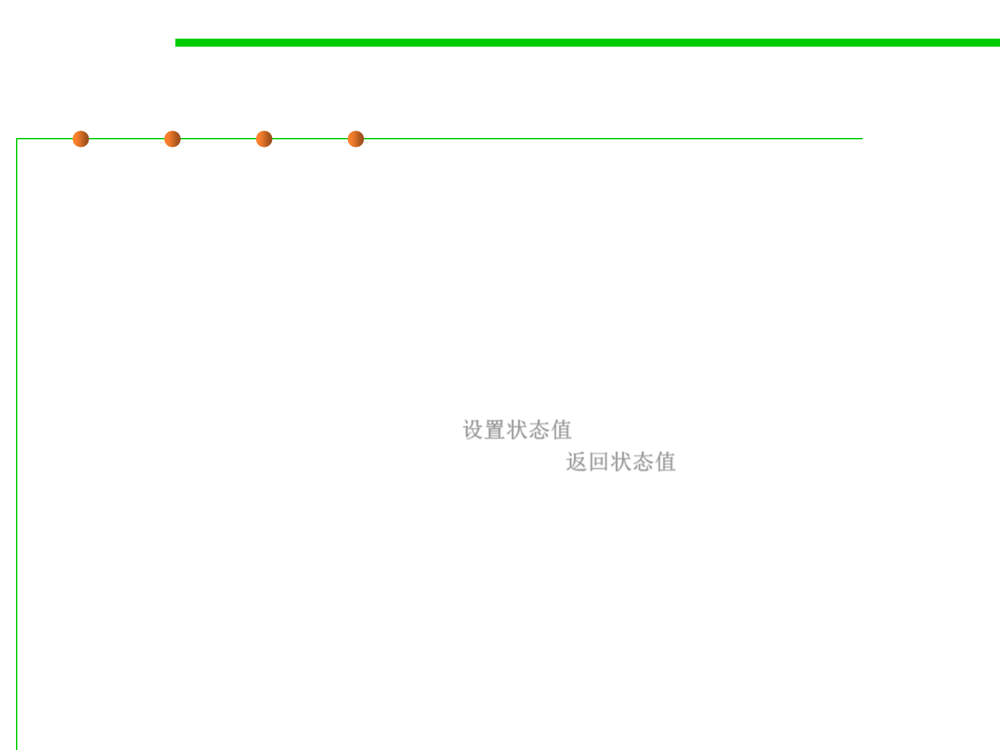

(6) Return an error code
7.2 Error and Exception Handling
▪ Return an error code (Correctness)
– You could decide that only certain parts of a system will handle errors;
other parts will not handle errors locally; they will simply report that an
error has been detected and trust that some other routine higher up in the
calling hierarchy will handle the error.
– The specific mechanism for notifying the rest of the system that an error
has occurred could be any of the following:
• Set the value of a status variable 设置状态值
• Return status as the function’s return value 返回状态值
• Throw an exception using the language’s built-in exception mechanism（ See
7.2.3 Exception handling） 利用异常机制
– In this case, the specific error-reporting mechanism is less important than
the decision about which parts of the system will handle errors directly
and which will just report that they’ve occurred. If security is an issue, be
sure that calling routines always check return codes.